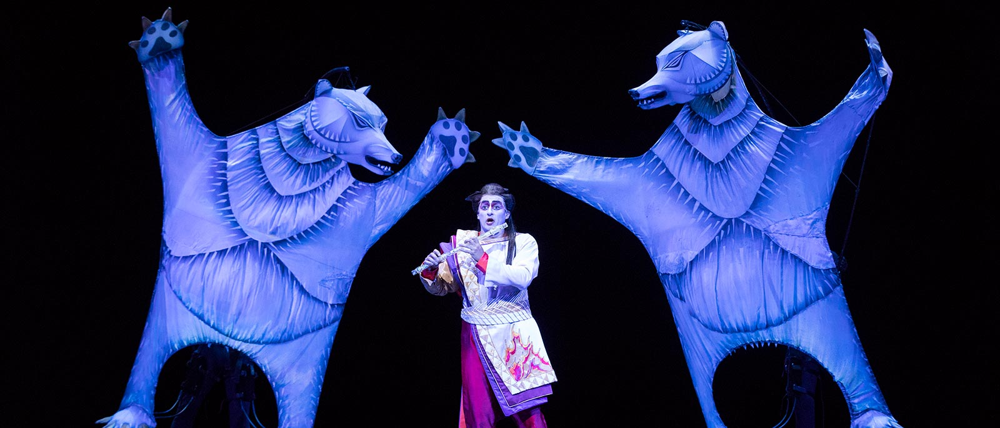

This Flute Has Plenty of Magic
by Patrick Hurley

From left to right: Nomcebo Zikode and Master KG
The Magic Flute, one of the most popular operas of all time, receives a cinematic makeover in the LA Opera’s stunning production, playing now at the Dorothy Chandler Pavilion.
Mozart’s opera, which created its own sort of mythology, gets transported to the silent-film era and utilizes an abundance of animation, cleverly designed by Paul Barritt. The story serves the new interpretation quite well, and while there are a few issues with narrative clarity, the production as a whole is a triumphant spectacle. What was particularly inventive was the use of silent film dialogue projected on the screen rather than being spoken. The Magic Flute is what is known as a singspiel, which was a very popular form in Mozart’s time, is much like the modern musical where songs are combined with spoken dialogue. For this production, in true silent film form, however, there is no spoken dialogue.
The story follows Prince Tamino (Joshua Wheeker) is persuaded by the Queen of the Night (Jeni Houser), who also happens to be a giant, creepy spider, to rescue her daughter Pamina (Zuzana Marková) who has been kidnapped by the high priest Sarastro (Ildebrando D’Arcangelo). What happens instead is that Tamino, along with his companion Papageno (Theo Hoffman), discover the high ideals of Sarastro’s community and decide they want to become a part of it. Before they can join, Pamina, Tamino and Papageno must submit themselves to severe trials of initiation. Act Two mostly comprises the various trials they must endure to prove themselves worthy. And while Pamina and Tamino succeed and vanquish the queen, Papageno proves too earthly to be of highest morality, but is bestowed the consolation prize of his ideal female companion.
Motivated by themes of enlightenment philosophy and anti-absolutism, The Magic Flute is wonderfully malleable to interpretation of anti- authoritarianism, and a morality which can be viewed through a religious or secular lens. The music, under conductor Grant Gershon, is exhilarating, beautiful, and deeply affective. The provocation of catharsis results from a perfectly balanced and nuanced building of evocative music. The highlight coming from the Queen of the Night’s Second Act “Der Hölle Rache” wherein she places a knife in the hand of her daughter telling her to kill Sarastro or she will disown her. Jeni Houser is sensational and, as the song demands, hits that high F flawlessly.
Overwhelmed as we might be by the sheer amount of animation that fills the giant screen- some of which feel excessive- this opera cleverly ushers in the future of the medium, while paying homage to a different medium of the past, and it is a triumph. Directors Barrie Kosky and Suzanne Andrade blend the elements of the performers, music, and visuals masterfully, so we’re left with a coherent, beautiful and entertaining production.
The Magic Flute
Music: Wolfgang Amadeus Mozart
Libretto: Emanuel Schikaneder
World premiere: September 30, 1791, at the Theater auf der Wieden (Vienna, Austria)
A production of the Komische Oper Berlin.
LA Opera has previously produced The Magic Flute in 1993, 1998, 2002, 2009, 2013 and 2016. (The Barrie Kosky production of The Magic Flute was presented in 2013 and 2016.)
Performance dates and times:
Saturday, November 16, 2019, at 7:30pm
Thursday, November 21, 2019, at 7:30pm
Saturday, November 23, 2019, at 7:30pm
Sunday, December 1, 2019, at 2pm
Thursday, December 12, 2019, at 7:30pm
Sunday, December 15, 2019, at 2pm
Performed in German with English supertitles
Estimated running time: two hours, 40 minutes, including one intermission
Venue: Dorothy Chandler Pavilion (135 North Grand Avenue, Los Angeles, 90012)